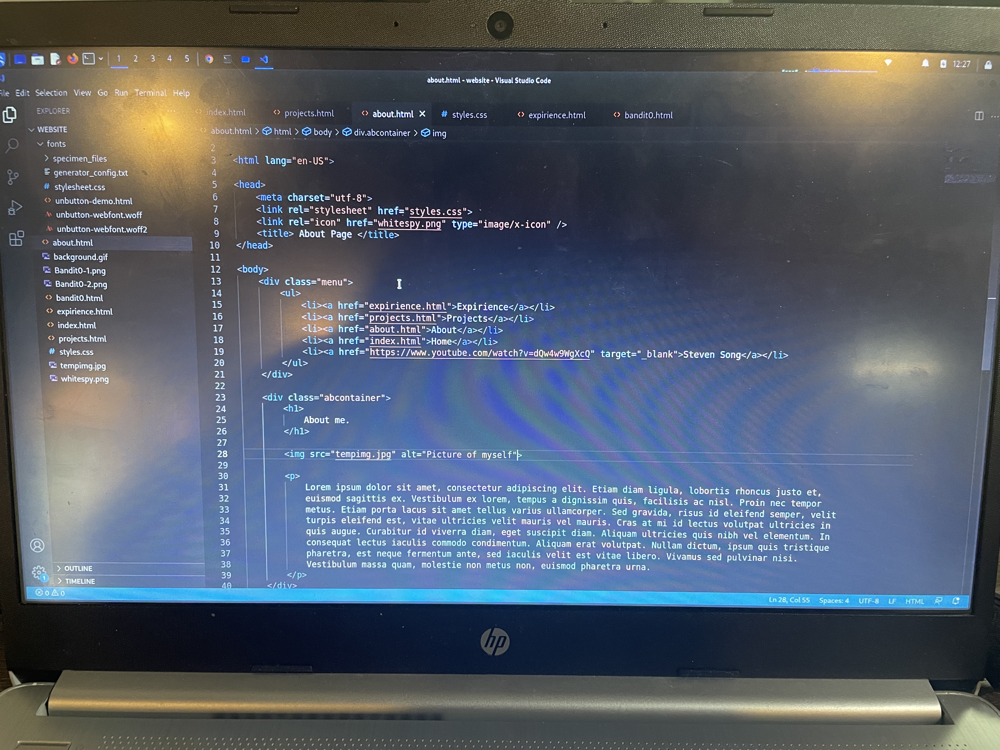

I have been deeply immersed in technology ever since middle school. From using a MacBook for school work to
using an old Dell PC for gaming. This has since had a great influence on my not only my hobbis and interests
but also my academic choices. Currently, I am pursuing a Computer Science
degree with a concentration in Cybersecurity at California State University, Fullerton.
In terms of coding languages, I have experience with Python, HTML/CSS, C++, and Assembly x86,
utilizing tools like VSCode, GitHub, and GDB for my programming projects and assignments. Additionally, I am
actively
working through OvertheWire and PicoCTFs, both cybersecurity related challenges that I plan to produce
writeups on. In terms of further education, I am working towards
completing Google's Cybersecurity Certificate, to later pursue the
Security+ and Network+ certification from CompTIA.
When it comes to my hobbies, I enjoy CTFs and FPS games. I find great enjoyment in the challenges brought on
by both as they promote problem solving and creative thinking. I often play games such
as Escape from Tarkov, Rainbow Six Siege, Apex Legends, and Valorant.
Feel free to contact me at any of the links located below!